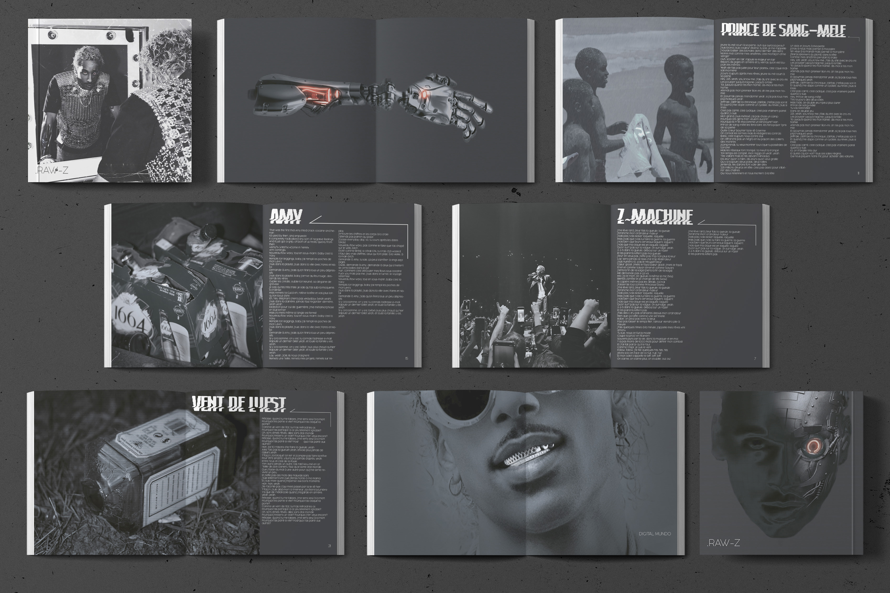
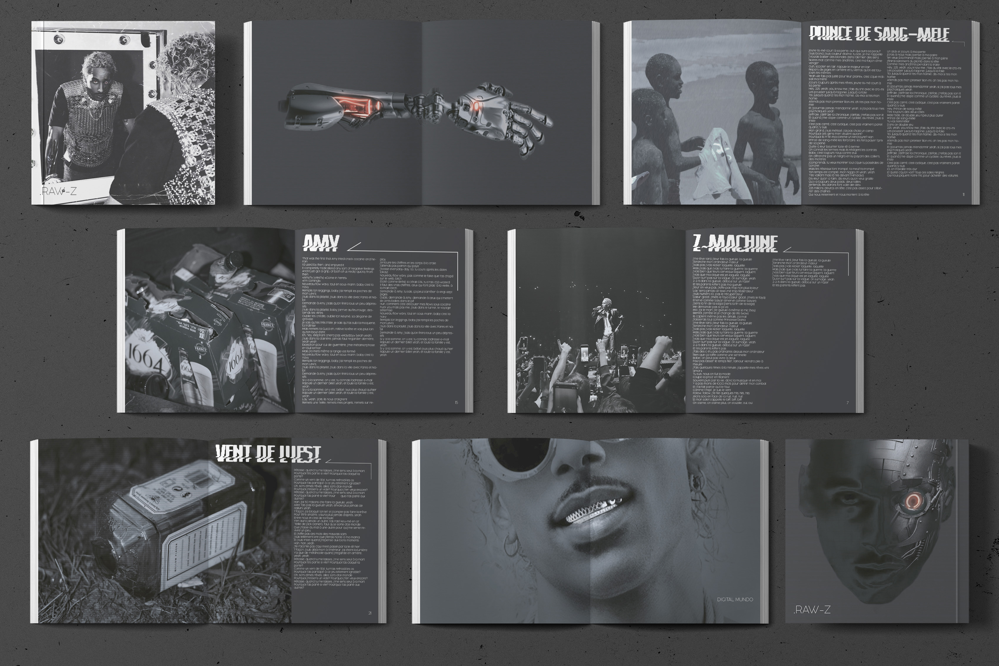

tour du monde

Lors de notre 3eme semestre, nous avions pour mission de représenter des données avec comme thème l’infini. Nous avons décidé de nous pencher sur l’infini du monde et des découvertes. Nous proposons donc un voyage pour découvrir les monuments du monde. J’ai entièrement codé le site et ai réalisé des monuments.
LANGAGES : HTML/CSS/JS
BIBLIOTHEQUES : HTML/CSS/JS
LIEN : https://jeannepacard.github.io/cattravel/
TAG : #Développer


 
